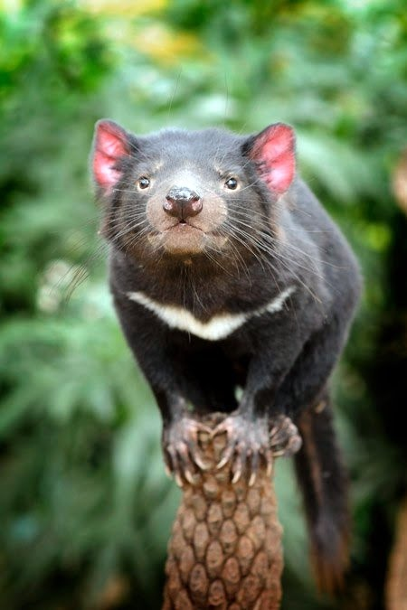

What is a Tasmanian Devil?
The Tasmanian devil (Sarcophilus harrisii), is the carnivorous marsupial that inhabits the eucalyptus forests, woodlands, coastal scrublands, and agricultural areas of the island of Tasmania, found eastern to Australia.
Standing at the average height of 20 to 31 inches and weighing in at only 9 to 26 pounds, they are one of the four of the Dasyuridae family that inhabit Tasmania.
They are creatures that are most commonly recognized for their black fur, the white stripe on their neck and their fat storing tail that is as long as half of their entire body.
Despite their small size their jaws are strong enough to chew through metal cages and break sheep legs. To counteract their overwhelming jaw strength, Tasmanian devils are not fast; unable to chase down a wallaby or a rabbit.
Due to these factors they tend to stick to small prey like birds and fish and only go after larger prey if they are ill and lame.
They are not wasteful creatures, known for eating everything of their prey including their bones and fur.
The lifespan of a Tasmanian Devil is a short five years, with a year spent in their mother's womb, and another as a jus